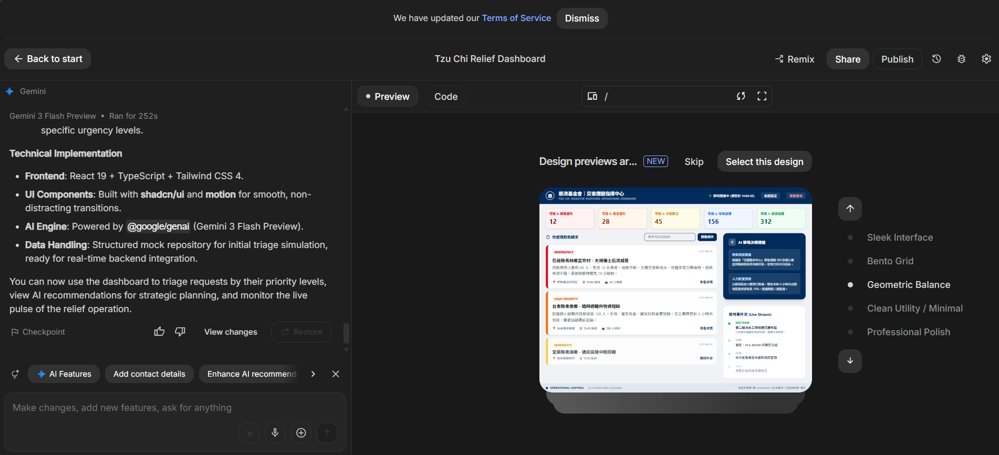
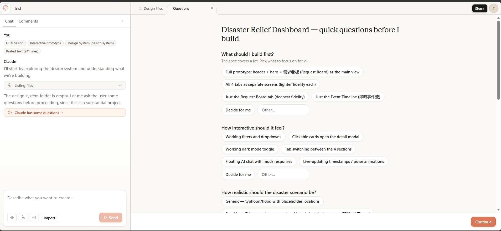

日常設計就用 Claude Design
需要最漂亮的畫面時再搭 Paper
五個 AI 設計工具實測：Figma Make · Paper · Stitch · AI Studio · Claude Design
不是取代 Figma，也不用學寫程式 —— 把重複費時的工作交給 AI。
不是要你改變習慣，而是多一個能幫你省時間的選擇。
下面 5 頁是每個工具的實測心得
開始前先選一個喜歡的版面風格，對美編很友善。點圖看大圖 ↓

先問清楚要做到什麼程度、要不要互動，答完才開始畫，成品更貼近你要的。點圖看大圖 ↓

| 能做多個版本？ | 能用滑鼠改？ (GUI editor) |
會動的互動？ | 能發佈網站？ | 能匯出到 Figma？ | |
|---|---|---|---|---|---|
| Figma Design 美編現在用的 |
✓ 多畫板並排 |
✓ 有 GUI 最熟悉 |
可，但手動 要一個個設定 |
✗ 只能分享設計稿 |
原生 本身就是 |
| Figma Make | ✗ | ✗ 只能打 prompt |
✓ | ✓ 一鍵上線 |
✓ 單向 |
| Paper | ✓ 用 prompt 生多個 |
✓ 有 GUI 能拖拉 |
✗ | ✗ 需匯出 |
✗ |
| Stitch AI | ✓ 用 prompt 生多個 |
部分 只能改文字，其餘靠 prompt |
幾乎沒有 | 預覽連結 | ✓ |
| AI Studio | ✗ 直接出網站 |
部分 只能改顏色/字型/大小 |
✓ 完整網站 |
✓ 能上線 |
✗ |
| Claude Design | ✗ 直接出網站 |
✓ 有 GUI 滑鼠+畫圖+滑桿 |
✓ 真的會動 | 需工程師 | ✗ |
💡 「能用滑鼠改 (GUI editor)」= 能像 Figma 一樣用滑鼠調整；標 ✗ 的只能打 prompt 改。
想把成果帶回 Figma 繼續修的話，目前只有 Figma Make（單向）和 Stitch 能匯出到 Figma。
不用全部都學。看你當下要做什麼，挑對的工具就好。
| 免費版 | 個人 / 團隊 | |
|---|---|---|
| Figma Make | 3 個檔案 | 約 $15–20/人/月 |
| Paper | 每週有限次數 | 約 $16/人/月（另需搭配 Claude） |
| Stitch AI | 每月有很多次 | 之後推出 |
| AI Studio | 完全免費 | — |
| Claude Design | 沒有單獨免費版 | 含在 Claude Pro（約 $17–20/月） |
💡 年繳通常比月繳便宜一些。AI Studio 永遠免費；Claude Design 如果團隊本來就有 Claude 帳號，就不用再多花錢。
五個工具用同一句描述測試後，給美編的明確建議。
AI 工具不是要取代 Figma，是分工合作。
在你熟悉的 Figma 裡，用「打字描述」讓 AI 幫你生出設計。第一次設定請工程師協助一次即可。